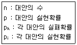
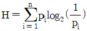
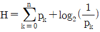
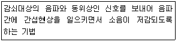

인간공학기사 (2019-03-03 기출문제)
1과목: 인간공학개론
1. 인간의 피부가 느끼는 3종류의 감각에 속하지 않는 것은?
- 압각
- 통각
- 온각
- 미각
(정답률: 83%)

2. 각각의 변수가 다음과 같을 때, 정보량을 구하는 식으로 틀린 것은?

- H=log2n
- H=log2(1/p)


(정답률: 80%)
3. 물리적 공간의 구성 요소를 배열하는데 적용될 수 있는 원리에 대한 설명으로 틀린 것은?
- 사용빈도 원리-자주 사용되는 구성요소를 편리한 위치에 두어야 한다.
- 기능성 원리-대표 기능을 수행하는 구성 요소를 편리한 위치에 배치해야 한다.
- 중요도 원리-시스템 목표 달성에 중요한 구성요소를 편리한 위치에 두어야 한다.
- 사용 순서 원리-구성 요소들 간의 관련 순서나 사용 패턴에 따라 배치해야 한다.
(정답률: 69%)
4. 어떤 시스템의 사용성을 평가하기 위해 사용하는 기준으로 적절하지 않은 것은?
- 효율성
- 학습용이성
- 가격 대비 성능
- 기억용이성
(정답률: 89%)
5. Fitts의 법칙에 관한 설명으로 맞는 것은?
- 표적이 작을수록, 이동거리가 짧을수록 작업의 난이도와 소요 이동시간이 증가한다.
- 표적이 작을수록, 이동거리가 길수록 작업의 난이도와 소요 이동시간이 증가한다.
- 표적이 클수록, 이동거리가 길수록 작업의 난이도와 소요 이동시간이 증가한다.
- 표적이 클수록, 이동거리가 짧을수록 작업의 난이도와 소요 이동시간이 증가한다.
(정답률: 89%)
6. 귀의 청각 과정이 순서대로 올바르게 나열된 것은?
- 신경전도→액체전도→공기전도
- 공기전도→액체전도→신경전도
- 액체전도→공기전도→신경전도
- 신경전도→공기전도→액체전도
(정답률: 89%)
7. 신호검출이론을 적용하기에 가장 적합하지 않은 것은?
- 의료진단
- 정보량 측정
- 음파탐지
- 품질 검사과업
(정답률: 54%)
8. 회전운동을 하는 조종장치의 레버를 30° 움직였을 때 표시장치의 커서는 4cm이동하였다. 레버의 길이가 20cm일 때, 이 조종 장치의 C/R 비는 약 얼마인가?
- 2.62
- 5.24
- 8.33
- 10.48
(정답률: 71%)
9. 밀러(Miller)의 신비의 수(Magic Number) 7±2와 관련이 있는 인간의 정보처리 계통은?
- 장기기억
- 단기기억
- 감각기관
- 제어기관
(정답률: 80%)
10. 인간공학 연구에 사용되는 기준(criterion, 종손변수) 중 인적 기준(human criterion)에 해당하지 않은 것은?
- 보전도
- 사고 빈도
- 주관적 반응
- 인간 성능
(정답률: 63%)
11. 시력에 관한 설명으로 틀린 것은?
- 근시는 수정체가 두꺼워져 먼 물체를 볼 수 없다.
- 시력은 시각(visual angle)의 역수로 측정한다.
- 시각(visual angle)은 표적까지의 거리를 표적두께로 나누어 계산한다.
- 눈이 파악할 수 있는 표적사이의 최소공간을 최소 분간시력(minimum separable acuity)이라고 한다.
(정답률: 59%)
12. 인간의 나이가 많아짐에 따라 시각 능력이 쇠퇴하여 근시력이 나빠지는 이유로 가장 적절한 것은?
- 시신경의 둔화로 동공의 반응이 느려지기 때문
- 세포의 팽창으로 망막에 이상이 발생하기 때문
- 수정체의 투명도가 떨어지고 유연성이 감소하기 때문
- 안구 내의 공막이 얇아져 영양 공급이 잘 되지 않기 때문
(정답률: 80%)
13. 음 세기(sound intensity)에 관한 설명으로 맞는 것은?
- 음 세기의 단위는 Hz이다.
- 음 세기는 소리의 고저와 관련이 있다.
- 음 세기는 단위시간에 단위 면적을 통과하는 음의 에너지이다.
- 음압수준 측정시에는 2000Hz의 순음을 기준음압으로 사용한다.
(정답률: 80%)
14. 청각적 코드화 방법에 관한 설명으로 틀린 것은?
- 진동수는 많을수록 좋으며, 간격은 좁을수록 좋다.
- 음의 방향은 두 귀 간의 강도차를 확실하게 해야 한다.
- 강도(순음)의 경우는 1000~4000Hz로 한정할 필요가 있다.
- 지속시간은 0.5초 이상 지속시키고, 확실한 차이를 두어야 한다.
(정답률: 75%)
15. 인체측정 자료의 유형에 대한 설명으로 틀린 것은?
- 기능적 치수는 정적 자세에서의 신체치수를 측정한 것이다.
- 정적 치수에 의해 나타나는 값과 동적 치수에 의해 나타나는 값은 다르다.
- 정적 치수에는 골격 치수(skeletal dimension)와 외곽 치수(contour dimension)가 있다.
- 우리나라에서는 국가기술표준원 주관하에 ‘SIZE KOREA' 라는 이름으로 인체 치수조사 사업을 실시하여 인체 측정에 관한 결과를 제공하고 있다.
(정답률: 88%)
16. 정량적 시각 표시장치의 기본 눈금선 수열로 가장 적당한 것은?
- 2, 4, 6ㆍㆍㆍ
- 3, 6, 9ㆍㆍㆍ
- 8, 16, 24ㆍㆍㆍ
- 0, 10, 20ㆍㆍㆍ
(정답률: 87%)
17. 인간공학을 지칭하는 용어로 적절하지 않은 것은?
- Biology
- Ergonmics
- Human factors
- Human factors engineering
(정답률: 82%)
18. 웹 네비게이션 설계 시 검토해야 할 인터페이스 요소로서 가장 적절하지 않은 것은?
- 일관성이 있어야 한다.
- 쉽게 학습할 수 있어야 한다.
- 전체적인 문맥을 이해하기 쉬워야 한다.
- 시각적 이미지가 최대한 많이 제공되어야 한다.
(정답률: 87%)
19. 인간이 기계를 조종하여 임무를 수행해야 하는 직렬구조의 인간-기계 체계가 있다. 인간의 신뢰도가 0.9, 기계의 신뢰도 0.9이라면 이 인간-기계 통합 체계의 신뢰도는 얼마인가?
- 0.64
- 0.72
- 0.81
- 0.98
(정답률: 78%)
20. 인체측정치의 응용원칙과 관계가 먼 것은?
- 극단치를 이용한 설계
- 평균치를 이용한 설계
- 조절식 범위를 이용한 설계
- 기능적 치수를 이용한 설계
(정답률: 68%)
2과목: 작업생리학
21. 점광원으로부터 어떤 물체나 표면에 도달하는 빛의 밀도를 나타내는 단위로 맞는 것은?
- nit
- Lambert
- candela
- lumen/m2
(정답률: 73%)
22. 최대산소소비능력(MAP)에 관한 설명으로 틀린 것은?
- 산소섭취량이 일정하게 되는 수준을 말한다.
- 최대산소소비능력은 개인의 운동역량을 평가하는데 활용된다.
- 젊은 여성의 평균 MAP는 젊은 남성의 평균 MAP 20~30% 정도이다.
- MAP를 측정하기 위해서 주로 트레드밀(treadmill)이나 자전거 에르고미터(ergometer)를 활용한다.
(정답률: 75%)
23. 정적 자세를 유지할 때의 떨림(tremor)을 감소시킬 수 있는 방법으로 적당한 것은?
- 손을 심장 높이보다 높게 한다.
- 몸과 작업에 관계되는 부위를 잘 받친다.
- 작업 대상물에 기계적인 마찰을 제거한다.
- 시각적인 기준(reference)을 정하지 않는다.
(정답률: 75%)
24. 신경계에 관한 설명으로 틀린 것은?
- 체신경계는 피부, 골격근, 뼈 등에 분포한다.
- 자율신경계는 교감신경계와 부교감신경계로 세분된다.
- 중추신경계는 척수신경과 말초신경으로 이루어진다.
- 기능적으로는 체신경계와 자율신경계로 나눌 수 있다.
(정답률: 68%)
25. 어떤 작업자의 5분 작업에 대한 전체 심박수는 400회, 일박출량은 65mL/회로 측정되었다면 이 작업자의 분당 심박출량(L/min)은?
- 4.5L/min
- 4.8L/min
- 5.0L/min
- 5.2L/min
(정답률: 54%)
26. 육체적인 작업을 할 경우 순환기계의 반응이 아닌 것은?
- 혈압의 상승
- 혈류의 재분배
- 심박출량의 증가
- 산소 소모량의 증가
(정답률: 44%)
27. 인체의 해부학적 자세에서 팔꿈치 관절의 굴곡과 신전 동작이 일어나는 면은?
- 시상면(sagittal plane)
- 정중면(median plane)
- 관상면(coronal plane)
- 횡단면(transverse plane)
(정답률: 68%)
28. 소음방지대책 중 다음과 같은 기법을 무엇이라 하는가?

- 음원 대책
- 능동제어 대책
- 수음자 대책
- 전파경로 대책
(정답률: 62%)
29. 기초대사량의 측정과 가장 관계가 깊은 자세는 무엇인가?
- 누워서 휴식을 취하고 있는 상태
- 앉아서 휴식을 취하고 있는 상태
- 선자세로 휴식을 취하고 있는 상태
- 벽에 기대어 휴식을 취하고 있는 상태
(정답률: 78%)
30. 소음에 의한 청력손실이 가장 크게 발생하는 주파수 대역은?
- 1000Hz
- 2000Hz
- 4000Hz
- 10000Hz
(정답률: 89%)
31. 어떤 작업의 총 작업시간이 35분이고 작업 중 평균에너지 소비량이 분당 7kcal라면 이 때 필요한 휴식시간은 약 몇 분인가? (단, Murrell의 공식을 이용하며, 기초대사량은 분당 1.5kcal, 남성의 권장 평균 에너지소비량은 분당 5kcal이다.)
- 8분
- 13분
- 18분
- 23분
(정답률: 63%)
32. 정적 평형상태에 대한 설명으로 틀린 것은?
- 힘이 거리에 반비례하여 발생한다.
- 물체나 신체가 움직이지 않는 상태이다.
- 작용하는 모든 힘의 총합이 0인 상태이다.
- 작용하는 모든 모멘트의 총합이 0인 상태이다.
(정답률: 68%)
33. 정신활동의 부담척도로 사용되는 시각적 점멸융합주파수(VFF)에 대한 설명으로 틀린 것은?
- 연습의 효과는 적다.
- 암조응시는 VFF가 증가한다.
- 휘도만 같으면 색은 VFF에 영향을 주지 않는다.
- VFF는 조명 강도의 대수치에 선형적으로 비례한다.
(정답률: 69%)
34. 근세포막에 전달된 흥분을 근세포 내부로 전달하는 통로역할을 하는 것은?
- 근초(sarcolemma)
- 근섬유속(fasciculuse)
- 가로세관(transverse tubules)
- 근형질세망(sarcoplasmic reticulum)
(정답률: 58%)
35. 근육 대사작용에서 혐기성 과정으로 글루코오스가 분해되어 생성되는 물질은?
- 물
- 피루브산
- 젖산
- 이산화탄소
(정답률: 83%)
36. 근(筋)섬유에 관한 설명으로 틀린 것은?
- 적근섬유(slow twitch fiber)는 주로 작은 근육 그룹에서 볼 수 있다.
- 백근섬유(fast twitch fiber)는 무산소 운동에 좋아 단거리 달리기 등에 사용된다.
- 근섬유는 백근섬유(fast twitch fiber)와 적근점유(slow twitch fiber)로 나눌 수 있다.
- 운동이 격렬하여 근육에 산소공급이 원활하지 않은 경우에는 엽산이 생성되어 피곤함을 느낀다.
(정답률: 84%)
37. 교대근무와 생체리듬과의 관계에서 야간근무를 하는 동안 근무시간이 길어질 때 졸음이 증가하고 작업능력이 저하되는 현상을 무엇이라 하는가?
- 항상성 유지기능
- 작업적응 유지기능
- 생리적응 유지기능
- 야간적응 유지기능
(정답률: 65%)
38. 수술실과 같이 대비가 아주 낮고, 크기가 작은 아주 특수한 시각적 작업의 실행에 가장 적절한 조도는?
- 500~1000럭스
- 1000~2000럭스
- 3000~5000럭스
- 10000~20000럭스
(정답률: 67%)
39. 근력 및 지구력에 대한 설명으로 틀린 것은?
- 정적인 근력 측정치로부터 동적 작업에서 발휘할 수 있는 최대 힘을 정확히 추정할 수 있다.
- 근력 측정치는 작업 조건뿐만 아니라 검사자의 지시내용, 측정방법 등에 의해서도 달라진다.
- 근육이 발휘할 수 있는 힘은 근육의 최대자율수 축(MVC)에 대한 백분율로 나타난다.
- 등척력(isometric strength)은 신체를 움직이지 않으면서 자발적으로 가할 수 있는 힘의 최대값이다.
(정답률: 72%)
40. 고온 스트레스의 개인차에 대한 설명 중 틀린 것은?
- 나이가 들수록 고온 스트레스에 적응하기 힘들다.
- 남자가 여자보다 고온에 적응하는 것이 어렵다.
- 체지방이 많은 사람일수록 고온에 견디기 어렵다.
- 체력이 좋은 사람일수록 고온 환경에서 작업할 때 잘 견딘다.
(정답률: 78%)
3과목: 산업심리학 및 관계법규
41. 검사작업자가 한 로트에 100개인 부품을 조사하여 6개의 부적합품을 발견했으나 로트에는 실제로 10개의 부적합품이 있었다면 이 검사 작업자의 휴먼에러 확률은 얼마인가?
- 0.04
- 0.06
- 0.1
- 0.6
(정답률: 65%)
42. 안전관리의 개요에 관한 설명으로 틀린 것은?
- 안전의 3요소는 Engineering, Education, Economy이다.
- 안전의 기본원리는 사고방지차원에서의 산업재해 예방활동을 통해 무재해를 추구하는 것이다.
- 사고방지를 위해서 현장에 존재하는 위험을 찾아내고, 이를 제거하거나 위험성(risk)을 최소화한다는 위험통제의 개념이 적용되고 있다.
- 안전관리란 생산성을 향상시키고 재해로 인한 손실을 최소화하기 위하여 행하는 것으로 재해의 원인 및 경과의 규명과 재해방지에 필요한 과학 기술에 관한 계통적 지식체계의 관리를 의미한다.
(정답률: 86%)
43. 주의의 범위가 높고 신뢰성이 매우 높은 상태의 의식수준으로 맞는 것은?
- Phase 0
- Phase Ⅰ
- Phase Ⅱ
- Phase Ⅲ
(정답률: 79%)
44. 근로자가 400명이 작업하는 사업장에서 1일 8시간씩 연간 300일 근무하는 동안 10건의 재해가 발생하였다. 도수율(빈도율)은 얼마인가? (단, 결근율은 10%이다.)
- 2.50
- 10.42
- 11.57
- 12.54
(정답률: 44%)
45. 재해 발생 원인의 4M에 해당하지 않는 것은?
- Man
- Movement
- Machine
- Management
(정답률: 89%)
46. 인간과오를 방지하기 위하여 기계설비를 설계하는 원칙에 해당되지 않는 것은?
- 안전설계(fail-safe design)
- 배타설계(exclusion design)
- 조절설계(adjustable design)
- 보호설계(prevention design)
(정답률: 57%)
47. 부주의를 일으키는 의식수준에 대한 설명으로 틀린 것은?
- 의식의 저하:귀찮은 생각에 해야 할 과정을 빠뜨리고 행동하는 상태
- 의식의 과잉:순간적으로 의식이 긴장되고 한 방향으로만 집중되는 상태
- 의식의 단절:외부의 정보를 받아들일 수도 없고 의사결정도 할 수 없는 상태
- 의식의 우회:습관적으로 작업을 하지만 머릿속엔 고민이나 공상으로 가득 차 있는 상태
(정답률: 60%)
48. 조직을 유지하고 성장시키기 위한 평가를 실행함에 있어서 평가자가 저지르기 쉬운 과오 중, 어떤 사람에 관한 평가자의 개인적 인상이 피평가자 개개인의 특징에 관한 평가에 영향을 미치는 영향을 설명하는 이론은?
- 할로 효과(halo effect)
- 대비오차(contrast effect)
- 근접오차(proximity effect)
- 관대화 경향(centralization tendency)
(정답률: 75%)
49. 집단 간 갈등원인과 이에 대한 대책으로 틀린 것은?
- 영역 모호성-역할과 책임을 분명하게 한다.
- 자원부족-계열사나 자회사로의 전직기회를 확대한다.
- 불균형 상태-승진에 대한 동기를 부여하기 위하여 직급 간 처우에 차리를 크게 둔다.
- 작업유동의 상호의존성-부서간의 협조, 정보교환, 동조, 협력체계를 견고하게 구축한다.
(정답률: 72%)
50. 제조업자가 합리적인 대체설계를 채용하였더라면 피해나 위험을 줄이거나 피할 수 있었음에도 대체설계를 채용하지 아니하여 해당 제조물이 안전하지 못하게 된 경우를 지칭하는 결함의 유형은?
- 제조상의 결함
- 지시상의 결함
- 경고상의 결함
- 설계상의 결함
(정답률: 78%)
51. 테일러(F.W. Taylor)에 의해 주장된 조직형태로서 관리자가 일정한 관리기능을 담당하도록 기능별 전문화가 이루어진 조직은?
- 위원회 조직
- 직능식 조직
- 프로젝트 조직
- 사업부제 조직
(정답률: 73%)
52. 어떤 사람의 행동이 “빨리빨리, 경쟁적으로, 여러 가지를 한꺼번에“한다고 하면 어떤 성격특성을 설명하는가?
- typt-A 성격
- typt-B 성격
- typt-C 성격
- typt-D 성격
(정답률: 83%)
53. NIOSH직무스트레스 모형에서 직무스트레스 요인과 성격이 다른 한 가지는?
- 작업 요인
- 조직 요인
- 환경 요인
- 상황 요인
(정답률: 52%)
54. 심리적 측면에서 분류한 휴먼에러의 분류에 속하는 것은?
- 입력오류
- 정보처리오류
- 생략오류
- 의사결정오류
(정답률: 49%)
55. 스트레스가 정보처리 수행에 미치는 영향에 대한 설명으로 거리가 가장 먼 것은?
- 스트레스 하에서 의사결정의 질은 저하된다.
- 스트레스는 효율적인 학습을 어렵게 할 수 있다.
- 스트레스는 빠른 수행보다는 정확한 수행으로 편파시키는 경향이 있다.
- 스트레스에 의해 인지적 터널링이 발생하여 다양한 가설을 고려하지 못한다.
(정답률: 85%)
56. 여러 개의 자극을 제시하고 각각의 자극에 대하여 반응을 하는 과제를 준 후, 자극이 제시되어 반응할 때까지의 시간을 무엇이라 하는가?
- 기초반응시간
- 단순반응시간
- 집중반응시간
- 선택반응시간
(정답률: 75%)
57. 재해 예방 원칙에 대한 설명 중 틀린 것은?
- 예방 가능의 원칙-천재지변을 제외한 모든 인재는 예방이 가능하다.
- 손실 우연의 원칙-재해손실은 우연한 사고원인에 따라 발생한다.
- 원인 연계의 원칙-사고에는 반드시 원인이 있고 원인은 대부분 복합적 연계 원인이 있다.
- 대책 선정의 원칙-사고의 원인이나 불안전요소가 발견되면 반드시 대책을 선정하여 실시하여야 한다.
(정답률: 67%)
58. 휴먼에러 확률에 대한 추정기법 중 Tree구조와 비슷한 그림을 이용하며, 사건들을 일련의 2지(binary) 의사결정 분지(分枝)들로 모형화 하여 직무의 올바른 수행여부를 확률적으로 부여함으로 에러율을 추정하는 기법은?
- FMEA
- THERP
- fool proof method
- Monte Carlo method
(정답률: 82%)
59. 동기이론 중 직무 환경요인을 중시하는 것은?
- 기대이론
- 자기조절이론
- 목표설정이론
- 작업설계이론
(정답률: 63%)
60. 리더가 구성원에 영향력을 행사하기 위한 9가지 영향 방략과 가장 거리가 먼 것은?
- 자문
- 무시
- 제휴
- 합리적 설득
(정답률: 82%)
4과목: 근골격계질환 예방을 위한 작업관리
61. 근골격계 질환 예방ㆍ관리 프로그램에서 추진팀의 구성원이 아닌 것은?
- 관리자
- 근로자대표
- 사용자대표
- 보건담당자
(정답률: 72%)
62. 작업관리의 문제분석 도구로서, 가로축에 항목, 세로축에 항목별 점유비율과 누적비율로 막대-꺽은선 혼합 그래프를 사용하는 것은?
- 파레토차트
- 간트차트
- 특성요인도
- PERT 차트
(정답률: 72%)
63. 작업분석에 사용되는 공정도나 차트가 아닌 것은?
- 유통선도(Flow Diagram)
- 활동분석표(Activity Chart)
- 간접노동분석표(Indirect Labor Chart)
- 복수작업자분석표(Gang Process Chart)
(정답률: 57%)
64. 곤골격계 질환을 예방하기 위한 대책으로 적절하지 않은 것은?
- 단순 반복 작업은 기계를 사용한다.
- 작업장법과 작업공간을 재설계한다.
- 작업순환(Job Rotation)을 실시한다.
- 작업속도와 작업강도를 점진적으로 강화한다.
(정답률: 88%)
65. 요소작업이 여러 개인 경우의 관측횟수를 결정하고자 한다. 표본의 표준편차는 0.6이고, 신뢰도 계수는 2인 추정의 오차범위 ±5%를 만족시키는 관측횟수(N)는 몇 번인가?
- 24번
- 66번
- 144번
- 576번
(정답률: 39%)
66. 개정된 NIOSH 들기 작업 지침에 따라 권장 무게 한계(RWL)를 산출하고자 할 때, RWL이 최적이 되는 조건과 거리가 먼 것은?
- 정면에서 중량물 중심까지의 비틀림이 없을 때
- 작업자와 물체의 수평거리가 25cm 보다 작을 때
- 물체를 이동시킨 수직거리가 75cm 보다 작을 때
- 수직높이가 팔을 편안히 늘어뜨린 상태의 손 높이일 때
(정답률: 63%)
67. 셀(Cell) 생산방식에 가장 적합한 제품은?
- 의류
- 가구
- 선발
- 컴퓨터
(정답률: 82%)
68. 근골격계 질환 관련 위험작업에 대한 관리적 개선으로 볼 수 없는 것은?
- 작업의 다양성 제공
- 스트레칭 체조의 활성화
- 작업도구나 설비의 개선
- 작업일정 및 작업속도 조절
(정답률: 53%)
69. 근골격계 질환의 요인에 있어 작업 관련 요인에 해당하는 것은?
- 매장 경력
- 작업 만족도
- 휴식시간 부족
- 작업의 자율적 조절
(정답률: 67%)
70. 간헐적으로 랜덤한 시점에서 연구대상을 순간적으로 관측하여 대상이 처한 상황을 파악하고 이를 토대로 관측시간 동안에 나타난 항목별로 차지하는 비율을 추정하는 방법은?
- PTS법
- 워크샘플링
- 웨스팅하우스법
- 스톱워치를 이용한 시간연구
(정답률: 72%)
71. I TMU(Time Measurement Unit)를 초단위로 환산한 것은?
- 0.0036초
- 0.036초
- 0.36초
- 1.667초
(정답률: 78%)
72. 동작경제원칙 중 신체의 사용에 관한 원칙이 아닌 것은?
- 두 손은 동시에 시작하고, 동시에 끝나도록 한다.
- 두 팔은 서로 반대 방향으로 대칭적으로 움직이도록 한다.
- 가능하다면 쉽고 자연스러운 리듬이 생기도록 동작을 배치한다.
- 타자 칠 때와 같이 각 손가락이 서로 다른 작업을 할 때에는 작업량을 각 손가락의 능력에 맞게 배분해야 한다.
(정답률: 63%)
73. 설비의 배치 방법 중 제품별 배치의 특성에 대한 설명 중 틀린 것은?
- 재고와 재공품이 적어 저장면적이 작다.
- 운반거리가 짧고 가공물의 흐름이 빠르다.
- 작업 기능이 단순화되며 작업자의 작업 지도가 용이하다.
- 설비의 보전이 용이하고 가동율이 높기 때문에 자본투자가 적다.
(정답률: 53%)
74. 작업분석의 활용 및 적용에 관한 사항 중 틀린 것은?
- 조업정지의 손실이 큰 작업부터 대상으로 한다.
- 주기기간이 짧은 작업의 동작분석은 서블릭 분석법을 이용한다.
- 사람의 동작이 많은 작업을 개선하려는 경우에 적용하는 것이 바람직하다.
- 반복 작업이 많은 작업의 동작개선은 미세한 동작개선을 중심으로 한다.
(정답률: 45%)
75. A작업의 관측평균시간이 25DM이고, 제 1평가에 의한 속도평가계수는 120%이며, 제 2평가에 의한 2차 조정계수가 10%일 때 객관적 평가법에 의한 정미시간은 몇 초인가? (단, IDM=0.6초이다.)
- 19.8
- 23.8
- 26.1
- 28.8
(정답률: 30%)
76. 보다 많은 아이디어를 창출하기 위하여 가능한 모든 의견을 비판없이 받아 들이고 수정 발언을 허용하며 대량 발언을 유도하는 방법은?
- Brainstorming
- SEARCH
- Mind Mapping
- ECRS 원칙
(정답률: 84%)
77. 작업관리의 목적에 부합하지 않는 것은?
- 안전하게 작업을 실시하도록 한다.
- 작업의 효율성을 높여 재고량을 확보한다.
- 생산 작업을 합리적이고 효율적으로 개선한다.
- 표준화된 작업의 실시과정에서 그 표준이 유지 되도록 한다.
(정답률: 76%)
78. 어느 병원의 간호사에 대한 근골격계 질환의 위험을 평가하기 위하여 인강공학분야에서 많이 사용되는 유해요인 평가도구 중 하나인 RULA(Rapid Upper Linb Assessment)를 적용하여 작업을 평가한 결과, 최종 점수가 4점으로 평가되었다. 평가 결과에 대한 해석으로 맞는 것은?
- 수용가능한 안전한 작업으로 평가됨
- 계속적 추가관찰을 요하는 작업으로 평가됨
- 빠른 작업개선과 작업위험요인의 분석이 요구됨
- 즉각적인 개선과 작업위험요인의 정밀조사가 요구됨
(정답률: 61%)
79. 근골격계 질환에 관한 설명으로 틀린 것은?
- 신체의 기능적 장해를 유발할 수 있다.
- 사전조사에 의하여 완전 예방이 가능하다.
- 초기에 치료하지 않으면 심각해질 수 있다.
- 미세한 근육이나 조직의 손상으로 시작된다.
(정답률: 81%)
80. 단위작업 장소 내에 4개, 8개의 동일작업으로 이루어진 부담 작업이 있다. 이러한 작업장에 대한 유해요인 조사 시 표본 작업 수는 각각 얼마 이상인가?
- 2, 2
- 2, 3
- 2, 4
- 4, 8
(정답률: 55%)